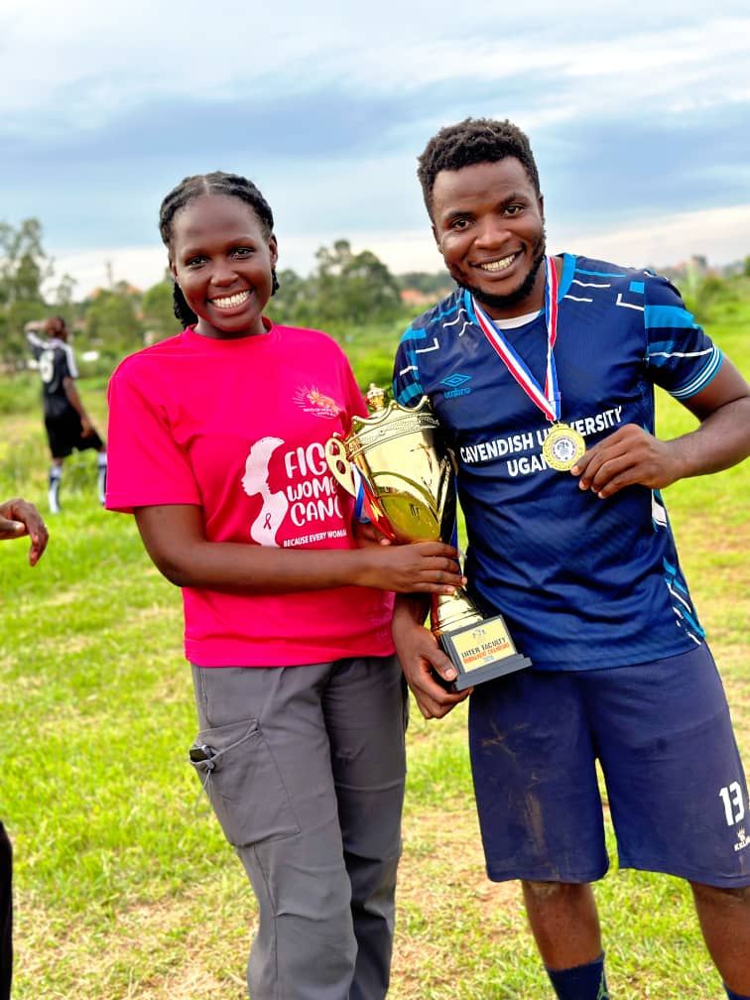

Students from four faculties participated in a competitive one day football gala during the Interfaculty Tournament Second Edition held at Cavendish University Mukono Campus on 2nd May 2026.
The tournament featured several exciting matches, trophy presentations, medal awards and celebrations from supporters as Law Faculty secured the championship title after an impressive performance throughout the competition.
According to Kubiriza Twaha Morgan, captain of the Law Faculty team and Deputy Speaker of Cavendish Law School (CLS), the tournament was organized to identify talented players for the university team.
“The main purpose of organizing the tournament was to get players who will feature in the Cavendish University team and participate in the inter-university league,” Morgan explained.

Kubiriza Twaha Morgan, captain of the Law Faculty team, poses after the tournament victory.